I decided recently that there must be some parks and nice green spaces left undiscovered in Chengdu that I could cycle to on my holiday. I just added a week to the National Day holiday from the 1st to the 7th here in Chengdu for a total break from work until the 17th – a much needed respite from the rigors of kindergarten life. Sharing life with little human beings and teaching them some English is about the only thing left in this world that I truly care about but we all need a break from time to time. Not that I ever get far from little kids – there are a lot of them here in Chengdu in spite of China’s so-called ‘one child’ policy. The well-off are still able to pay for that extra child or two. I seem to encounter them everywhere I go and people are much friendlier here. I can approach just about anyone I meet on the street and say ‘hi’ to a mom with her cute little babe.
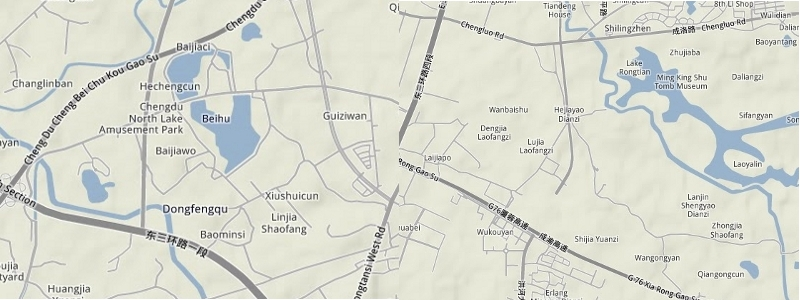
So, I pulled up the Google Maps terrain version online and zoomed in on what looked like a couple of promising lakes within the city limits – one in the east and another in the northeast (see above). That is the reason for the title of this posting – two lakes and what I found at them. From the overhead satellite view when I was researching how to find my way there – Lake Beihu and Lake Rongtian both appear as medium sized patches of water with surrounding parks and green spaces. Lake Beihu is even labeled on the map as the Chengdu North Lake Amusement Park and Lake Rongtian has the Ming King Shu Tomb Museum marked as being on its eastern shore. I figured that sounded promising and since I haven’t yet visited them during the more than four years I’ve lived in Chengdu they both would make nice day trips out of the city center. Lake Rongtian lies between the 3rd and 4th ring roads and Lake Beihu is just outside the 3rd ring road. I wasn’t able to find any information about Lake Rongtian on various descriptions of Chengdu tourist attractions online but did find current information on Lake Beihu (which needs to be updated in light of what I found there) in the following report posted on a local government website:
Beihu Lake 198 Project To Forge Metropolitan Leisure and Sports Complex
“It marks the start of Chenghua District’s planned project of Beihu Lake International Panda Tourist Zone and its drive for the Beihu Lake ‘198 Zone’ to become a ‘leisure paradise and sub-center of Chenghua District’”, revealed the responsible executives of China Merchants Group, adding that the Group will invest in the newly-contracted project of integrated development of the Beihu Lake 198 Zone. Scheduled to begin within the year, the project covers a total area of 1,700 mu and involves a gross investment of 117 million dollars. Eventually, Chengdu’s first suburban metropolitan leisure and sports complex and a world-class tourist destination will emerge around this area. By then, the whole Beihu Lake area will turn into Chenghua District’s sub-center featuring leisure and sports.”
It was a foggy Monday morning when I set out for Lake Rongtian. Looking at my route map, I tried to take a shortcut from my apartment outside the 4th ring road to a nice avenue that runs east by the Chengdu race track. Yes, Chengdu has one although I’ve never seen a race there. Just before you pass the race track, you come to the Lohas Green Way (another 198 project). 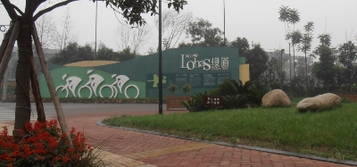
This is a nice purpose-made bicycling path that goes out beyond the 4th ring road past an international golf club under construction and into the countryside where a very pleasant ‘green belt’ is being slowly built up around the outskirts of Chengdu. I’ve seen enough trees being planted all over the city to know that the planners take themselves seriously. The intention is to make Chengdu into a ‘Green City’ – not a bad idea at all. All the trees are needed to counteract the local smog from cars, air pollution (a lot of dust from the cement being used to build up the city and its highways), and to help locals breathe clean air. We don’t get that many smog-free days here, especially in the winter, so when the sun breaks through the overcast sky, it is a welcome sight.
The scenery between the 3rd and the 4th ring roads in the southeastern pie section of Chengdu is a surprising mix of urban construction and remaining areas of what used to be wide-spread village farms and planted land. It is slowly being developed day by day but enough remains of the original countryside to get a clear picture of what it looked like not so long ago. My neighborhood is just southwest of a section of this piece of the Chengdu pie that contains several local cemeteries. I remember when Katya and Mirko (two cycling couchsurfers who stayed with me last year) and my Chinese friend Peter discovered this cemetery atop a small hill overlooking the 4th ring road on, of all days, Halloween 2010. We sat there and had a beer while looking at all the urns filled with the ashes of dear, departed Chinese ancestors. It wasn’t exactly a picnic spot one would normally choose but was pleasant enough. There are still some very nice Chinese farm houses out there – here is a shot of one (below) that I wish I could be living in. It’s only about a 100 yards from these steps probably leading up to yet another local cemetery. “Sleep with the dead and feel at peace” – what a ‘tourist’ catch phrase that could be. I imagine the nearby ‘Cemetery of the Martyrs’ could be billed as a tourist attraction if you stretched the truth a little. 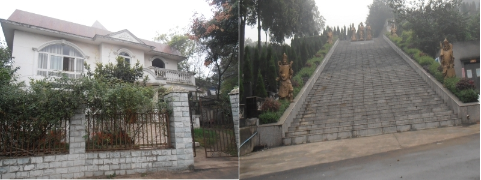
Back to my route map – following the route was often just a matter of using my little compass and staying within the borders of the 3rd ring road on my left and the 4th ring road on my right while heading east and north. The further east one goes within Chengdu the more one sees that urban development has yet to reach some areas out there. The south and west of Chengdu are obviously getting the ‘green belt’ and ‘garden city’ treatment but much of it has yet to reach east. It seems like an older part of the city and a lot of apartments could use more than jut a touch-up. I ran across an original, mud-brick farm house just on the edge of an expressway headed out of town. 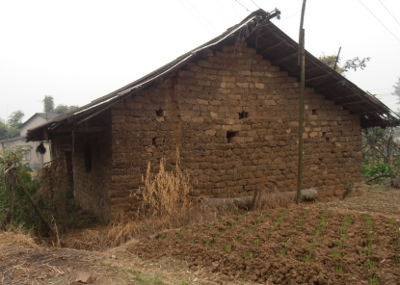
It reminded me a lot of houses I’ve seen in Nepal or India. It made me feel at home and I continued on my way to Lake Rongtian. It wasn’t easy to find – there are no signs in Chinese or English pointing the way. I had to find it by feeling out the area and taking a steep, unpaved road up a hillside through a stretch of forest and finally coming to its back entrance. Surprise, surprise – what did I find but that the entire lake has been encircled with a fence to keep everyone out. Obviously, someone has earmarked the area for development but at this stage it is just a prime piece of real estate guarded by security cops who patrol its borders and keep everyone out. It is a pristine, unspoiled wetland where local birds are probably the only living creatures to enjoy its charms.
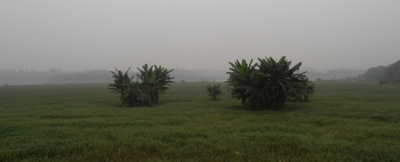
On the eastern edge of the lake are the grounds of the aforementioned Ming King Shu Tomb Museum – where there is a beautiful tea house, a restaurant or two and the related compound. I took a picture or two of the museum area (closed) and this beautiful house that seemed to be for the private use of whomever is in charge of this little ‘hideout’ from the surrounding city. 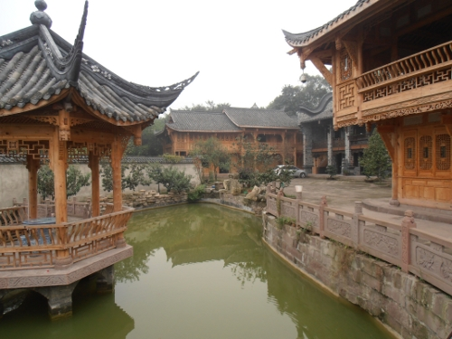
I have only seen this kind of archictecture previously in Taiwan and some parts of Thailand. It reminded me a lot of the home of a rich Burmese businessmen who was my neighbor in Mae Sot when I was teaching there. I didn’t see many people around – it was a weekday after all and the place was definitely hard to find. I don’t know what the plans are or may be for this secluded and ‘tucked-away’ corner of Chengdu. It is a place I would go to if I very much wanted a place to meditate in private, though, and I may find myself wandering out here again on a weekend with friends or students to explore further.
The following day, I followed the 3rd ring road all the way around the eastern edge of Chengdu to Lake Beihu. It is a good hour and a half cycle trip from my apartment, past the new East Railway station with its high speed bullet trains to Chonquing and other parts of eastern and southern China. Along the way, I passed another reminder of the presence of the 198 project near some large car dealerships. 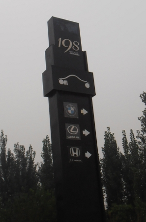
Go further to the southeast towards the town of Longquan and one goes by a lot of car factories – Volkswagen being one of them. This sign was in front of a large BMW dealership. I’ve seen enough of those being driven around town. It never ceases to amaze me how many highways are required for the modern day’s road ‘chariots’ – the tons and tons of cement used are just another unwelcome addition to the dust that often obscures the sky from view. Today, as I’m writing this blog and welcoming another visiting couch surfer, the sky is blue for a change. It has warmed up to t-shirt weather again and I want to get outside after I post this story. The billboards of planned developments and roads around town are amusing enough. I also took a picture of the massive railroad bridges being built near Lake Beihu. They cross the landscape to the west of the lake and mar the view unless you’re a railroad engineer and in love with bullet trains.
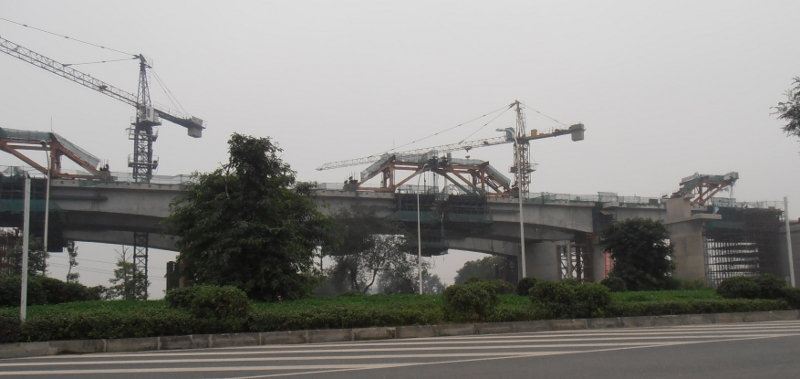
After turning right at the railroad bridges under construction I finally found the entrance road to Lake Beihu – or the Chengdu North Lake Amusement Park – as it was once known. Here, the process of development is obviously not underway yet. The place is largely abandoned but not yet fenced off. I was able to cycle in and around the lake. It must have been beautiful a decade ago. It is very similar to Lake Rongtian – a beautiful environmental habitat for migrating wildlife. There used to be a lot of restaurants and country cottages surrounding the lake – now many of them lying in ruins or half-destroyed. 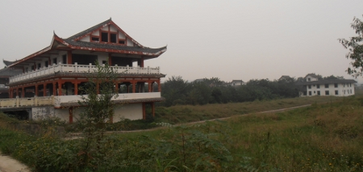
A few empty buildings remained on the lake shore to give an idea of what it might have looked like in its heyday. The lake is nice except for the high power lines that go across it overhead and destroy the view. I have read enough about people suffering illnesses living near high power lines to know that for those who have moved away to other locations that they might be lucky after all. Whatever development may come, I am sure those high power lines will remain – how else to power that electric bullet train that passes so nearby?
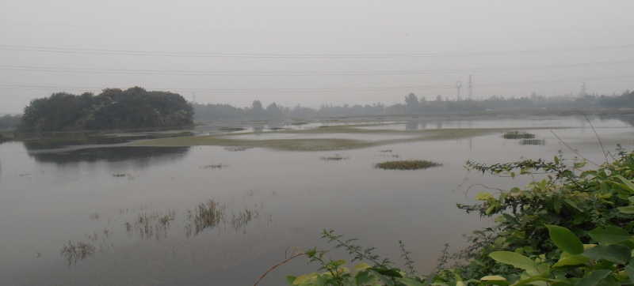
From my studies of development for my M.A., I realize the hidden costs of development for tourism. I have also seen a lot of buildings under construction in Chengdu. With a lot of properties still vacant I can reflect on the stories about ‘ghost cities’ in China that I’ve encountered on the internet. People still buy into them for the investment value – I wonder at the wisdom of this. I suppose it is OK for people who know what they are risking playing this game. However, I am not unaware of how the ‘housing bubble’ in the USA finally collapsed, as they all must sooner or later.
I am sure the urban planners ensconced in their bureaucratic niches around the city are motivated at least in part by the profits to be made and so are the investors from wherever they may come. I often wonder if they have plans for the countryside in Sichuan – will it all become urban sprawl or megacities like Chongquing? Have the urban planners envisioned a way in the future for everyone to still be fed? Will more and more farmers and local villagers be moved off their land to make room for more and more high rises and tourist complexes? Who can afford to enjoy these complexes when they’re finished? My local friend told me that the farmers who have sold their land and/or house to make room for these projects are luckier than they are. I am told they receive not only a large sum for their property but a monthly living wage that makes them well-off. I don’t have any personal knowledge of this – I live on the outskirts of town and have seen a lot of furniture factories up close. They hire a lot of local labor as do the construction/property development corporations – all of this labor is of the low wage variety. I don’t know how many of the migrant workers appreciate the development of Chengdu as a ‘garden city’ or if they are happy about how they participate in this great plan.
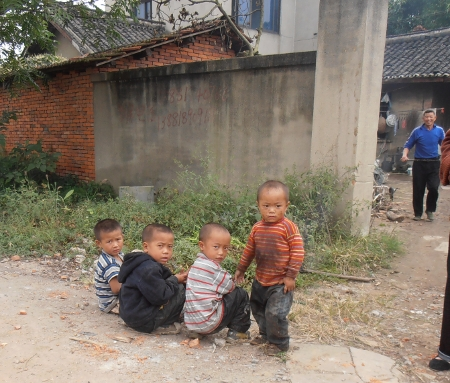
I cycled just to the north edge of Lake Beihu and saw the remains of the village that once stood on its banks. A lot of the farmers’ former homes are now derelict or razed to the ground. I saw these adorable scamps outside one house. I wonder if they appreciate the 198 project’s plan for their former home. Or, maybe, they haven’t sold out yet. I don’t know what they are holding on to – a lost dream from the past, perhaps? Again, those hidden costs of development that keep cropping up to blemish the beautiful image of Chengdu as a ‘garden city’ are a constant reminder that not all is as it seems in China. Chengdu has become a city of towers and tower blocks spread across the landscape. Whether or not they are beautiful I don’t know – the person who lives in one can be the only judge of that. As for myself, while I have enjoyed my life in Chengdu to a certain measured extent, my heart is constantly pulling me back to a different kind of tower. It is not a man-made one that resembles an empty mausoleum or monument to a ‘zombie apocalypse’ but, instead, is the natural one of the mighty Himalaya. I will retreat next year to those mountains and refresh my soul – it has grown weary of Chengdu and the big city lifestyle.
Dhane, October 12, 2011
Filed under: China and